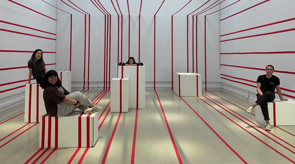

tape tape tape tape tape

tape, tape, tape, tape, tape, too is a palimpsest — the horizontal lines covering the room's existing walls, floors, and model stands to create a sort of palimpsest. Rice Dance Theater choreographed a dance for the space where they moved the model stands, creating a palimpsest of their own over our work. Gala attendees were invited into the space and for the duration of the gala, the attendees used the model stands as props, tables, and informal seating. There bodies became the final act of visual vandalism, becoming both performers and the audience.
With a grant of $500 from the Anderson School of Architecture, we installed tape, tape, tape, tape, tape over the course of 24 hours.
